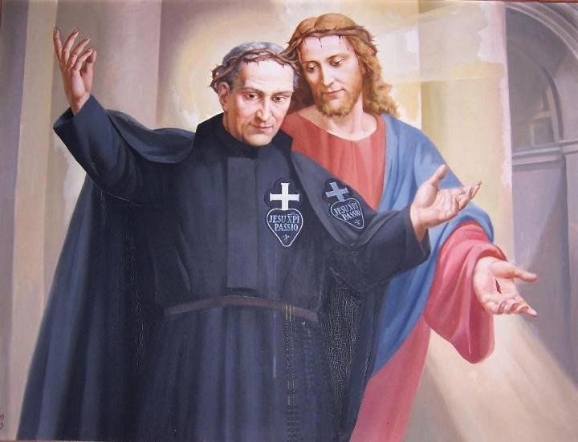

" SÃO PAULO DA CRUZ"

"PAULO FRANCISCO NASCEU ILUMINADO PELA LUZ DE DEUS, QUE O PREPAROU AO LONGO DOS ANOS A FIM DE FUNDAR UMA CONGREGAÇÃO RELIGIOSA CATÓLICA, PARA DIVULGAR INTENSAMENTE A PAIXÃO DE JESUS CRUCIFICADO. FUNDOU 12 MOSTEIROS MASCULINOS E UM CONVENTO FEMININO, DA ORDEM DENOMINADA PASSIONISTA, DEIXANDO AINDA UMA IMPRESSIONANTE MENSAGEM DE AMOR A HUMANIDADE DE TODAS AS GERAÇÕES".

=ÍNDICE=
 - FOTOGRAFIAS + CONVITE
+ E-MAIL
- FOTOGRAFIAS + CONVITE
+ E-MAIL